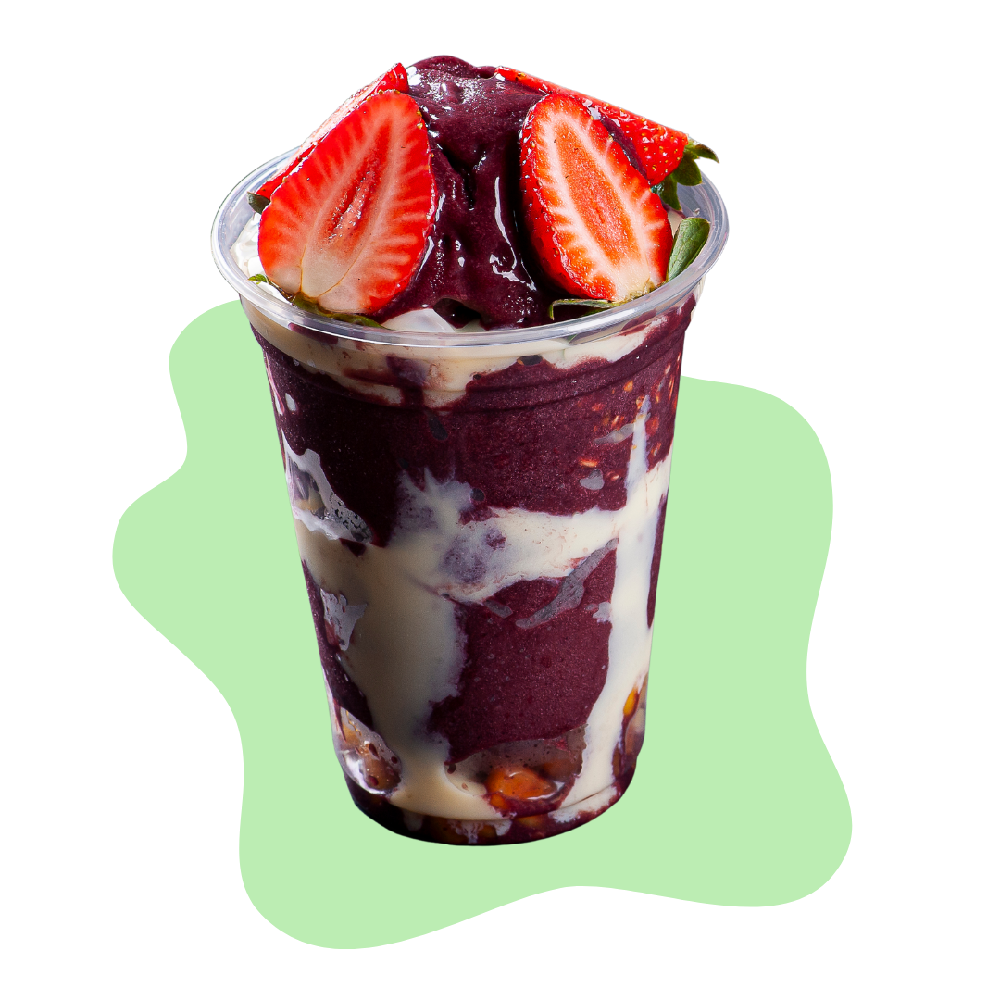

A empresa "O Melhor Açaí Cupuaçu" é a sua melhor opção para desfrutar dos deliciosos sabores da Amazônia. Nós oferecemos uma ampla variedade de opções de açaí e cupuaçu, servidos no copo, na tigela ou na casquinha, com acompanhamentos de morango, banana, leite condensado, paçoca, amendoim, leite ninho e cereais. Nossos frutos são cultivados de forma sustentável e com respeito às comunidades locais, garantindo que você possa desfrutar de nossos produtos com a consciência tranquila. Além disso, nós usamos apenas ingredientes frescos e de alta qualidade em nossos pratos, para que você possa ter a melhor experiência possível ao saborear nossos deliciosos açaís e cupuaçus.